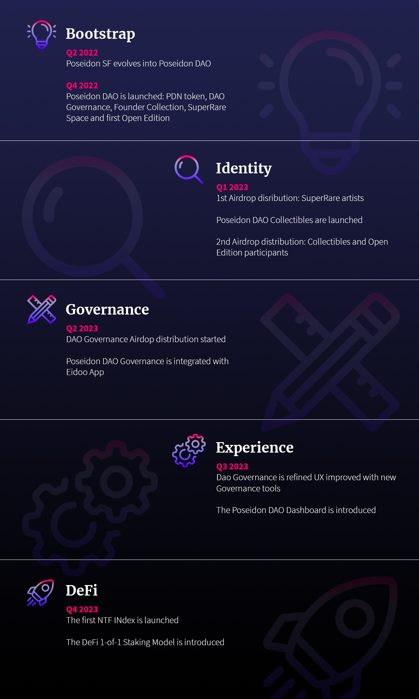

Poseidon DAO, started collecting NFTs back in 2015 when they were only known by the name collectibles. Since its inception, Poseidon DAO identified the NFT as the blockchain killer app. Indeed, NFTs have proven to be the technology able to unlock blockchain mainstream adoption. Poseidon DAO started collecting card games like Spells of Genesis and Force of Will, keep following the evolution of the NFTs landscape, collecting Blue Chip collectibles such as CryptoPunk#4174 and BAYC#5899. Since 2020, Poseidon DAO focused on Crypto Art, collecting and never selling 1-of-1 NFT artworks. At this point, the collection involves both known and emerging NFT artists, totaling between 200 and 300 artists. In this last phase, the NFT Fund evolved into the idea of Poseidon DAO. The evolution is built on top of a huge collection, the relationships created thanks to it, and the need for the disintermediation of its curation.
As the concept of blockchain relies on a distributed network of computers, represented by different entities sharing the same protocol, the crypto art is born by a group of artists supporting a new way of making art, the Non-Fungible Token digital mean. Believing in NFTs and onboarding new artists in order to expand the credibility of this new artistic movement, they made it possible to be no longer named only digital artists, but crypto artists as well.
Crypto artists are the outcome of a community effort, indeed the community quickly exploded in size, still onboarding hundreds of new artists. Crypto art offers new opportunities to both artists that didn’t find their place in the traditional art market and known artists that are looking for new perspectives. Numbers growth is subject to well known market rules: competition increase, fewer opportunities and questionably some opportunism. It just gets harder and harder to feel part of the same cohesive community that determined the recent growth of crypto art. The first question is then whether the noisy crypto Twitter is the best solution for shaping the bright future of this space.
At the same time, it also gets harder for collectors to filter the noise, building their collection not only as a form of investment, but serving the growth of crypto art in the right direction as they did up to this point. Building a large collection is both exciting and fulfilling, but it comes with some complexities: focus, pressure and judgement. Collectors are not, in most cases, bottomless pits able to buy whatever seems good. Buying artworks requires making choices, curation knowledge, long term vision, taking into account multiple relationships, building trust and reputation.
We believe the DAO, Decentralized Autonomous Organization, is the perfect representation of a model combining the requirement of a cohesive and focused community and the requirements for building a valuable collection. The collection is leveraged for shaping the direction of this community of innovators. The governance model enables productivity at scale, the tokenomic incentives participation, the decentralization avoids bindings, the openness allows opportunities.
Our goal is to make the crypto art the artistic movement of the XXI century, creating a decentralized curator based on a strong artistic knowledge, investing and innovating in the NFTs technology. The founders are the same pioneers that believe in Bitcoin in the early years, marrying its vision about removing the need for bank intermediaries in the financial system, and identifying the same principle in NFTs, removing gallery intermediaries for the artists.
Poseidon DAO will be the place for the same early adopters and artists to shape the future of crypto art. In our opinion, innovating in this space means designing new financial models that ease access to financial resources and instruments. In this case, NFTs themselves become financial assets beyond the artwork asset as historically meant, transforming them into liquid and expendable assets. We believe the NFTs DeFi opens up the doors to an unprecedented evolution of art. This model democratizes access to valuable art, as well as leverages valuable art to democratize access to credit.
Architecture

Poseidon DAO is composed by two souls: DAO Governance and Founder Collection. The PDN Token is the glue between them. The token holders have access to DAO Governance using PDN Token. The amount of tokens held defines the voting power in the DAO Governance. The DAO Governance is the core of the DAO, where important decisions are made, managing the DAO Treasury and the business model initiatives. The DAO Governance is led by DAO Boards, that are composed by thematic committees. We will dig into the details of the DAO Governance, in the next section.
Token holders can burn a certain amount of tokens, defined as Burn Ratio, in order to become Guardians. Guardians receive a Guardian NFT, onward named gNFT, that grant them access to the Founder Collection. The Founder Collection is the vault where the whole Poseidon DAO collection is held, at the moment of the DAO launch. The Guardians will be the keepers of the collection. The collection is not meant to be frozen, but the Guardians will run a specific Collection Governance in order to define buy/sell operations over it. The Guardians will be able to grant dividends themselves over the Collection Governance proceedings, that will be reinvested in the collection otherwise. The amount of gNFT held defines the dividends' percentage over the pool of minted NFTs. We will dig into the details of the distribution and governance mechanisms in the following sections.
We decided to split the DAO in two strands. The first reason is we want to maintain higher control over the collection, obviously because of the high investment and effort we put into it. The second reason is we don’t want to limit the scope of the DAO to a decentralized curator focusing on growing our NFT collection. We think this goal would not be inspiring for artists, indeed would be the wrong premise for a community that aims to shape the future of crypto art, explained in the Introduction.
In the following sections, we are going to discuss in details all the concepts introduced in this chapter.
The PDN Token
The Poseidon Token (PDN) is an ERC20 token that will be released with a supply of 1.000.000.000 PDN. The token will implement the community-driven governance and will act as an incentive for active participation in the DAO. The token is a key factor in the DAO economics, beyond the value of the token itself. Indeed, it both grants voting rights to the token holders and unlocks access to the Founder Collection.
The token will be a liquid asset available for exchange through decentralized pools like Uniswap. The token will also regulate the working relationship for the DAO contributors that will be involved in DAO boards or execute tasks for the DAO.
Genesis Distribution
The initial token distribution is important for defining the direction of the DAO. A large part of tokens will be reserved to the founder in order to keep high influence over the Founder Collection, burning the largest part of received tokens. A summary of the genesis distribution can be seen in the picture below.
The initial distribution is meant after the initial burn because the deflated amount will be the actual circulating supply. The after-burn distribution chunks are described in the following sections.
Distribution - Pre Burn

Distribution - Post Burn

Airdrop - 200.000.000 PDN (40%)
40% of tokens will be reserved for airdrops to incentivize decentralization and, in particular, as an incentive for external potential contributors for participating in the launches that will be part of the business model.
The airdrop tokens will always be available 180 days following the airdrops, which will be distributed at different times based on the different activities. Check the Roadmap chapter for more details about the distributions. In the following sub-sections, the list of pre-allocated chunks for airdrop distributions.
SR Artists - 5.000.000 PDN (1%)
Collected SuperRare artists will be the first group receiving PDN in airdrop, as a sign of the high-quality standard we want to set for the DAO.
Collectibles - 75.000.000 PDN (15%)
A relevant part of Airdrop distributed PDN tokens will be reserved for the collectibles launch in order to incentivize high participation and reach for our collection.
Open Editions - 50.000.000 PDN (10%)
The participants in Open Edition launches will receive PDN tokens in airdrop as well as an incentive to participate and create liquidity for the DAO.
Governance - 50.000.000 PDN (10%)
DAO participation and voting will be rewarded and incentivized with periodical airdrops out of this part of the reserve.
Reserve - 20.000.000 PDN (4%)
An additional small reserve will be held for extra initiatives and partners that will contribute to the development of the DAO.
DAO Treasury - 200.000.000 PDN (40%)
A large part of the supply is retained in the DAO Treasury, which will be regulated by the DAO Board. PDN tokens in the DAO Treasury are subject to governance procedures. The whole DAO Treasury vests immediately after the launch.
Team - 50.000.000 PDN (10%)
The team that will initially compose also the DAO Board will have a small amount of tokens reserved with a long vesting period.
Investors - 50.000.000 PDN (10%)
The team will raise the initial funding round to ensure the initial DAO Treasury and decentralized liquidity pools. Investor tokens will be subject to a vesting mechanism, and the PDN tokens will be released incrementally. The initial agreement allows investors to return the PDN in exchange for an equal amount of NFTs from the Founder Collection.
DAO Governance
In this chapter, we will explore the Governance approach and the leadership structure. Taking into account the target of the DAO are not web3 wizards that will easily interact with the smart contracts, the DAO should leverage the easier governance tools existing. Most likely, developing new tools to reduce the gap between the governance and contributors will be required. User experience should be a first-class citizen in Poseidon DAO, allowing effective communication of community efforts, voting proposals and facilitating discussions. At the same time, governance participation should not be expensive for contributors. These requirements force a careful tradeoff between on-chain and off-chain tools.
Snapshot is the most famous and used decentralized governance platform. It allows easy management of votes and proposals, is gassless and supports a number of voting types and strategies. For these reasons, it fits the requirements described above and will be our choice for the governance.
Discussions will mainly take place on Poseidon DAO Discord Server. New proposals will be shared and discussed on Twitter. In particular, a weekly Twitter Space will be held in order to keep the community up to date and drive the discussions.
What we described so far is roughly what DAO ecosystems are composed of today, and we are aware we cannot stop here, as mentioned above. We are actively working and exploring further solutions to integrate the DAO Governance into other tools. The first tools will be the Eidoo app, that will integrate DAO Governance out of the box, allowing easy interaction between token holding and proposals participation. In this way, we will be able to provide easy access to artists through a unique window for all DAO related activities.
DAO Boards
The Boards compose the leadership structure already mentioned a few times up to this point. In this chapter, we present the set of boards, their goals and structure. A leadership structure is required to move things forward, indeed, initially the board members will be assigned by the founders, with the goal of driving the DAO adoption and development during the first year. Afterward, members will be democratically elected through the governance procedures.
Because we rely on leadership positions to guarantee efficiency, we support the Lazy Consensus over the quorum based approach. In this way, all actions can be disputed by DAO members, but at the same time, voting only takes place when there is disagreement. Boards are not isolated groups operating independently, but they should participate into discussions and interact with other boards in order to support inclusion and diversity of ideas. The cooperation between multidisciplinary groups maximizes output and innovation.
At the same time, each board has a different scope and goals. For this reason, Board management is not fixed, but the number of members, the leaders and the activities planning are dynamically set based on the Board needs, as long as transparency principles are observed. Of course, the DAO governance is entitled at anytime to regulate Boards activities and challenge their actions.
DAO Board
The main council in charge of managing DAO Governance and Treasury. Because of its centrality and influence, it is not weird to find leaders from other boards to have a seat in this committee. The DAO Board will drive governance and financial related proposals.
The DAO Board members are also the keepers of the founding DAO multi-signature address. This way, this council is in charge of managing the Treasury. The multi-sig is updated every time a member leaves the board or a new member joins, accordingly. Initially, the multi-sig address is composed by 5 addresses, but the size can change if the Board will require more members. The minimum amount of members, as well as multi-sig address, must always be 5, as well as the total amount must always be odd, in order to guarantee voting majority.
Art Board
Arguably the most important council in the DAO, the Art Board will be composed by curators and artists, leading artistic related proposals. This committee will be in charge of guarantee a high quality standard for artists and works the DAO will be supporting.
Strategy Board
Composed by international NFT strategists, this committee plays an important role to guarantee authority validation with communities and potential contributors outside the DAO. At the same time, this council covers an important role inside the governance, making sure the initiatives launched by the DAO, as well as supported projects, are properly perceived outside and potentially successful.
Tech Board
A key aspect for the success of the project is to master the technical details involved into the initiatives and practical governance. This council makes sure the governance tools and supporting technologies work as expected, submitting improvement proposals in order to ease governance access and interface. Furthermore, this committee is the main through way for innovation proposals, that most of the time require a technical validation.
The Founder Collection
This chapter focuses on the second important gear of the DAO, the Founder Collection. This collection is composed by the whole Poseidon DAO collection, at the moment the DAO is launched, like a snapshot. As soon as the launch takes place, the collection ownership will no longer be in Founder’s hands, but will be subject to a new governance.
The collection counts almost up to 300 artists, and an estimated value over 10.000ETH. Not a single 1-of-1 artwork has ever been sold from this collection. The evolution, becoming the Founder Collection, means opening up an opportunity for the founder to leverage wider knowledge to grow the collection, and for people to contribute and have a comeback from it. It also means the collection is no longer only stacking artworks, but a different investing strategy is employed at stakeholders’ advantage.
As briefly described in the Architecture section, the stakeholders go by the name Guardians. The criteria and duties of this role will be described in the next section. It will be up to Guardians to decide which artworks will be acquired or sold, as well as whether proceedings will be employed for further investments, or distributed through dividends otherwise.
No further liquidity will be provided to the Founder Collection for buying artworks. We think the collection is massive enough to keep growing with the proper management strategy. Moving the collection ownership in the hands of a decentralized curator ensures unbiased focus, beyond personal relationships.
As mentioned in the Genesis Distribution chapter, the initial distribution is designed in order to make sure the founder will keep high control over the collection, guaranteeing it is properly managed.
The Guardians
Everyone interested into the opportunity to profit from the Founder Collection over contributing to the DAO Governance can become a Guardian. Becoming a Guardian requires burning a certain amount of token, named Burn Ratio. The burn ratio is not fixed and can be altered by guardians. Initially, the burn ratio is defined at 200.000PDN. Arguably, it will become more expensive to become a Guardian over time. The token holders burning the burn ratio amount will automatically mint and receive back the Guardian NFT. The gNFT is a standard ERC1155 token, and as such can be transferred. The gNFT is the mean that practically grants ownership over the collection. Burning tokens is a one-way operation, thus gNFT cannot be exchanged back for PDN tokens. gNFTs can be stacked, indeed multiple gNFTs can be minted and the owned amount defines the voting power, as well as the ownership percentage over the collection. Therefore, in case of dividends distribution, the received amount will be proportional to gNFT balance over the total existing supply.
The DAO Guardian
The DAO, an entity identified as a multi-sig address, is eligible for becoming a Guardian burning PDN tokens. Taking into account the DAO will receive a considerable amount of PDN as part of the Community Treasury, the voting power the DAO could gain over the Founder Collection must be taken under control. This scenario is not expected because it is just not aligned to the vision of the DAO, that is defined in a complete different direction.
Despite these assumptions, it is reasonable to assume the DAO itself will become a Guardian, although with a low voting power. This mechanism will ensure some additional cash flow to the DAO, whether the collection management turns out profitable.
Furthermore, exists a single exception to the one-way burn mechanism, that is the DAO itself. The DAO is, via smart contract modifier, the only entity able to go the other way around, burning a gNFT receiving PDN tokens back. The received amount of token is the current burn ratio. This mechanism alone traces a permanent strand between the DAO and the Founder Collection, projecting interesting scenarios about the management of the PDN supply.
This mechanism ensures the DAO is entitled to no longer be a Guardian of the Founder Collection, if the relation is no longer interesting for the Governance. At the same time, it unlocks an additional pool of liquidity for the DAO, limited by the amount of gNFTs that can be collected, but not to the initial PDN supply if the burn ratio is a growing amount. The market conditions and game theory will play an important role in the definition of the relationship between the DAO and Guardians.
Business Model
This chapter describes the core activities of the DAO, going through the initiatives that will define the business model. As described in the Introduction, a DAO is not only a community, but rather a productive organization generating cash flows. Cash flow is the fundamental brick for any company to thrive and innovate. Increasing cash flows means increasing the number of collaborators, taking more risks while investing and more dividends for the stakeholders. There are a number of ways to achieve cash flows, mostly depending on the business segment. We identified a set of meaningful initiatives, aligned with the Vision, that would allow achieving cash flows for the DAO development.
SuperRare Space
Poseidon DAO Space gallery will primarily aim to bring known and established artists from the traditional art sector to the NFT market. From our point of view, it is important to create synergies and connect the two sides of art that we see advancing in parallel today, with few intersections. By helping already established artists adopt NFTs, we are convinced to bring benefits to the entire ecosystem, allowing them, work after work, to gain greater visibility. From a DAO made up of collectors, curators and above all artists, who have the skills and knowledge to evaluate the works, we will select and exhibit in our space all those that the majority of the DAO will consider worthy. Artists who wish to exhibit in our space will thus have the opportunity to interact with colleagues and other leading figures in the sector and use feedback for constant and 360-degree growth. In this way, the DAO also offers itself as a space for research and selection of emerging artists.
Open Editions and Derivatives
Monthly drops with a limited supply and a limited amount of time, in collaboration with valuable artists. The artists will have their floor price guaranteed and additionally 10% of the Open Edition sale. The participants are incentivized to buy during the open edition because they will automatically receive a certain amount of PDN tokens back in airdrop.
The goal of the initiative is to generate cash flow, pay the team and encourage token distribution.
Collectibles
Collectibles will be a special initiative in collaboration with Niro Perrone wherein 2000 unique collectibles will be minted. The collectibles will be unique cartoon like tridents, with different traits and rarity. The tridents will act as PFP collectibles and will represent the hallmark of DAO contributors.
Founders and board members will receive special tridents, while a small amount will be distributed to token holders in airdrop. Furthermore, token holders will have access to the allow list in order to mint the collectibles at a discounted price. The mint will be available to everyone in a public sale.
The DAO itself will be reserved a number of collectibles, to be distributed or rewarded in future activities. If any collectible should remain unsold, they will be moved into the Community Treasury.
DeFi and Indexes
As mentioned in the Vision, further initiatives and developments will be proposed in the spectrum of the DeFi applied to NFTs. Among others, we are investigating opportunities and threat models related to NFTs stacking, where NFTs can be immobilized as collateral to get access to credit. This mechanism can extend the scope of the DAO, making even more room for crypto art collectors.
At the same time, in collaboration with a partner DeFi platform, we will be experimenting indexes as a financialization of crypto art. This space opens up endless opportunities to increase the liquidity in the space, as well as providing access to valuable art to a much wider audience. Tokenization and fractionalization can be leveraged in order to create indexes tied to single artists, a pool of artists or a pool of artworks. These instruments will create a brand-new asset class, based on an underlying that is historically unrelated to the traditional market (Parsons 2021). We envision a future where a CrytpoArtIndex or ETF will be available to everyone, or even more, CyberpunkCryptoArtIndex, PopCryptoArtIndex and much more.
All of this will not be available in the near future, but this is the direction we want to pursue and that would set the DAO as a service provider, tracing a really successful business model.
Roadmap
Around Q2 2022 Poseidon SF evolved into Poseidon DAO and we started designing the Governance and Business model. The DAO is introduced to partners in Q4 2022. The whole launch period is also focused on educational activities to introduce artists and collectors to the vision, DAO model, and UX.
By the end of 2022, the PDN token will be issued on the Ethereum network. At the same time, the DAO Governance model is introduced, as well as the Founder Collection. The launch of the DAO will coincide with the opening of SuperRare Space, as explained in the Business Model. The first Open Edition will be also launched to raise some liquidity for the initial operations.
Soon after the launch of the DAO, the first Airdrop distribution will take place, in favor of SuperRare artists. The rest of the Airdrop will take place after the launch of Poseidon DAO Collectibles, right after the first Airdrop. Participants in the Open Edition and Collectibles will both receive PDN tokens in airdrop.
The remaining tokens destined for airdrop distribution will be later distributed for Governance incentives and other initiatives like new Open Editions or Derivatives. At this point, around Q2 2023, the DAO Governance is integrated with Eidoo app, providing easy access to all participants.
Will follow a period, arguably the entire Q3, mainly focused on the learning process and experience improvements, that will lead to the implementation of new governance tools and integrations. At this point, we also plan to release an analytic Dashboard that will provide data and highlights about collected artists, their growth, and insights about operations targeting both the Founder Collection and investments for the DAO.
In Q4, the DAO will start focusing on innovation by launching the first NFT Index and presenting the research about the first Staking Model for 1-of-1 artworks used as collateral in a decentralized DeFi protocol. The full roadmap is summarized in the picture below.

Links
Official Website - https://www.poseidondao.org/
Twitter Profile - https://twitter.com/poseidon_sf
Whitepaper Draft 1.0 - https://www.poseidondao.org/Whitepaper_Poseidon_DAO.pdf
Deploy Collection - https://opensea.io/collection/poseidon-dao-deploy-collection
Telegram Channel - https://t.me/poseidondao
Opensea Collection - https://opensea.io/PoseidonNftFund
Superrare Collection - https://superrare.com/poseidonnftfund
Foundation Collection - https://foundation.app/@Poseidonnftfund